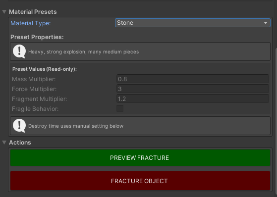
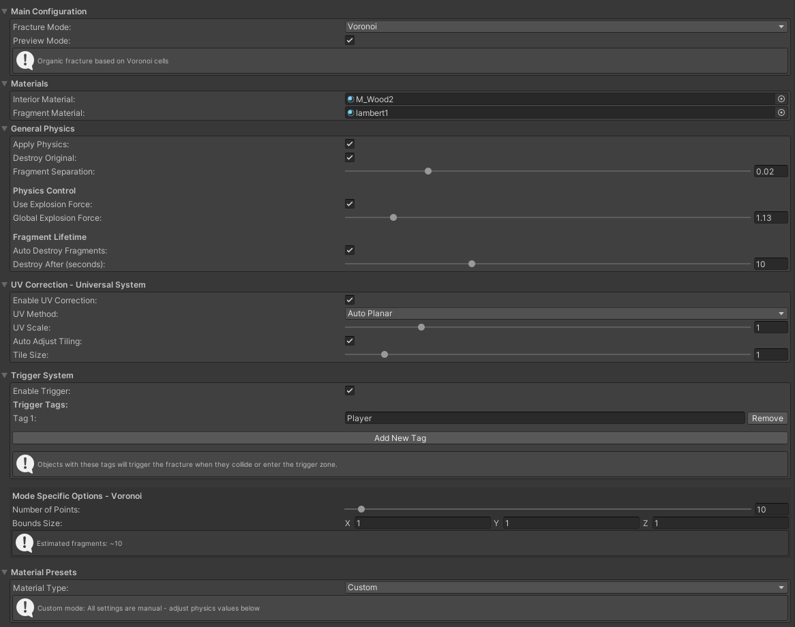
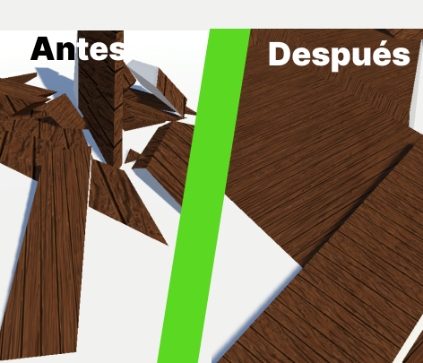

Galería del Proyecto

Presets de Materiales
Comportamientos físicos diferentes según el material

Editor Personalizado
Interfaz integrada en Unity Inspector
radial_fracture_demo.gif
Fractura Radial
Cortes radiales desde punto central

Fractura Grid
Fragmentación uniforme en rejilla 3D

Corrección UV
Antes y después de la corrección automática
physics_showcase.gif
Sistema Físico
Simulación física realista de fragmentos